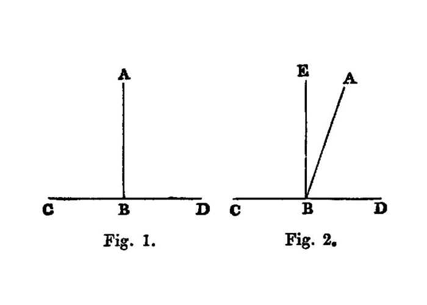

the angles created from intersecting lines are equal two right angles (on one side)
{kind=link}
If a straight line set up on a straight line make angles, it will make either two right angles or angles equal to two right angles.
===
For let any straight line AB set up on the straight line CD make the angles CBA, ABD;
I say that the angles CBA, ABD are either two right angles or equal to two right angles.
Now, if the angle CBA is equal to the angle ABD,
they are two right angles. [<a href=”/elem.1.def.10”>Def. 10</a>]
But, if not, let BE be drawn from the point B at right angles to CD; [<a href=”/elem.1.11”>I. 11</a>]
therefore the angles CBE, EBD are two right angles.
Then, since the angle CBE is equal to the two angles CBA, ABE,
let the angle EBD be added to each; [^I.13:1] therefore the angles CBE, EBD are equal to the three angles CBA, ABE, EBD. [<title>C. N</title>. 2]
Again, since the angle DBA is equal to the two angles DBE, EBA,
let the angle ABC be added to each; therefore the angles DBA. ABC are equal to the three angles DBE, EBA, ABC. [<title>C. N</title>. 2]
But the angles CBE, EBD were also proved equal to the same three angles;
and things which are equal to the same thing are also equal to one another; [<title>C. N</title>. 1] therefore the angles CBE, EBD are also equal to the angles DBA, ABC.
But the angles CBE, EBD are two right angles;
therefore the angles DBA, ABC are also equal to two right angles.
Therefore etc.
- [^I.13:1]: let the angle EBD be added to each,
literally <quote>let the angle EBD be added (so as to be) common,</quote> <foreign lang=”greek”>κοινὴ προσκείσθω ἡ ὑπὸ ΕΒΔ</foreign>. Similarly <foreign lang=”greek”>κοινὴ ἀφηρήσθω</foreign> is used of subtracting a straight line or angle from each of two others. <quote>Let the common angle EBD be added</quote> is clearly an inaccurate translation, for the angle is not common before it is added, i.e. the <foreign lang=”greek”>κοινὴ</foreign> is proleptic. <quote>Let the common angle be <em>subtracted</em></quote> as a translation of <foreign lang=”greek”>κοινὴ ἀφηρήσθω</foreign> would be less unsatisfactory, it is true, but, as it is desirable to use corresponding words when translating the two expressions, it seems hopeless to attempt to keep the word <quote>common,</quote> and I have therefore said <quote>to each</quote> and <quote>from each</quote> simply.